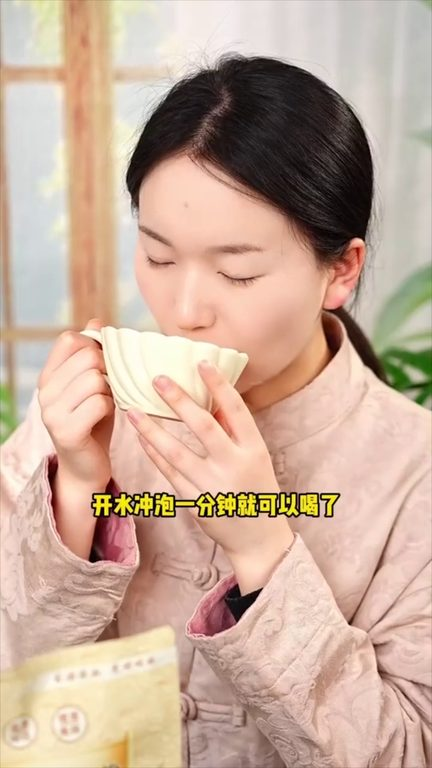
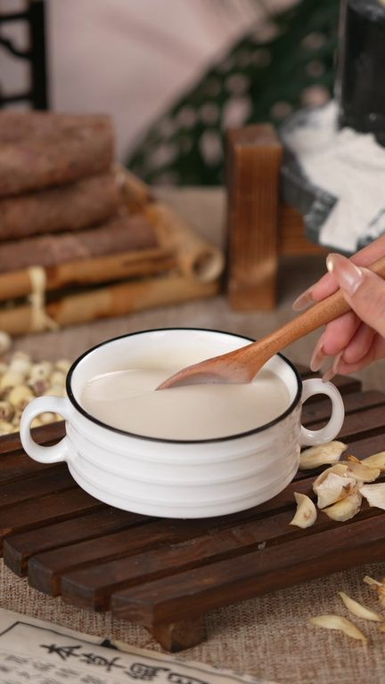

TOP 1 · 代表素材深度拆解
核心放量 稳健
视频为原始素材 HTTPS 链接；点击后加载，建议在网络环境良好时播放。
160.3万素材消耗
3.34%CTR
11.8%类目消耗占比
-0.26pp较类目均值
表现判断
该素材是类目内第 1 名，属于“核心放量”；CTR 低于类目均值。消耗体现承接规模，CTR 体现首屏与定向效率，两项应结合判断，不能仅以单指标下结论。
表达标签
口播三段式证据
开场钩子你再说一遍头爱冒汉吃莲子后背冒汉吃百合脖子冒汉吃山药把他们组合到一起就是三副天药喝的莲子百合山药粉你怎么这么败佳又买这个莲子百合山药粉败啥佳呀周夜庆拍一发六到手六大袋
中段论证喝了十六天的莲子百合山药粉如果你还拒绝不了大鱼大肉挑战半个月每天早起空腹一杯莲子百合山药粉在哪买不是买但妈不在巧农婆直播间买我们拒绝中间商自己直播卖货还没喝过的朋友赶快来直播间看看你囤这么多不要钱啊周年庆两位数拍一袋发六袋你说要不要钱够喝一个月趁周年庆囤刀儿女的可以什么都不给父母买但一定要给父母试试巧农婆的莲子百合山药粉它这个不仅高盖高蛋白还附含多种营养元素…
结尾转化老师傅手工研磨成粉每100克里还有625毫克亚麻酸62毫克类黄铜53毫克花青素10多种原生营养都是独立的包装打开就是满满的联子百合的清香每天一包开水冲泡一分钟就可以喝了现在周年庆大醋点进直播间看看才什么价这次错过真的又要等好久了
有效点
- 消耗占比 11.8% 说明具备投放承接能力，但 CTR 较类目均值低 0.26pp
- 口播包含明确到手机制或直播间指令，转化路径较完整
迭代动作
- 重做前 3–5 秒：结果前置、缩短背景铺垫，并把核心人群直接写进首屏字幕
- 视频时长偏长，建议剪出 30–45 秒短版，仅保留钩子、两项证据和一次 CTA
- 复核功效、绝对化及价格稀缺措辞；增加适用边界和效果因人而异提示
合规关注
钩子建立 · 5.1s
场景/问题展开 · 38.4s

卖点证据 · 88.5s

转化收口 · 121.8s
查看完整口播摘要
你再说一遍头爱冒汉吃莲子后背冒汉吃百合脖子冒汉吃山药把他们组合到一起就是三副天药喝的莲子百合山药粉你怎么这么败佳又买这个莲子百合山药粉败啥佳呀周夜庆拍一发六到手六大袋你看看才啥价天热出汉多给孩子喝这个比奶茶饮料强多了去哪拍的呀巧农婆直播间周夜庆到手六大袋线下划算多了一个爱吃大鱼大肉的大哥喝了十六天的莲子百合山药粉如果你还拒绝不了大鱼大肉挑战半个月每天早起空腹一杯莲子百合山药粉在哪买不是买但妈不在巧农婆直播间买我们拒绝中间商自己直播卖货还没喝过的朋友赶快来直播间看看你囤这么多不要钱啊周年庆两位数拍一袋发六袋你说要不要钱够喝一个月趁周年庆囤刀儿女的可以什么都不给父母买但一定要给父母试试巧农婆的莲子百合山药粉它这个不仅高盖高蛋白还附含多种营养元素现在更是有周年庆福利半价直接半价了这次你要是再不囤就真的没有了原料精选福建共联联子江西龙牙百合温馅铁棍山药三种草本食材老师傅手工研磨成粉每100克里还有625毫克亚麻酸62毫克类黄铜53毫克花青素10多种原生营养都是独立的包装打开就是满满的联子百合的清香每天一包开水冲泡一分钟就可以喝了现在周年庆大醋点进直播间看看才什么价这次错过真的又要等好久了